Artist Update
JUN 2024
2024 Updates.
2024
Hello everyone, I'm excited to share some new updates with you!! These past few months have been great, there's a lot happening (I've relocated to Bangkok!), and there's also plenty of studying and self-reflection going on. From winning awards to participating in international exhibitions and speaking at renowned events, it's been a whirlwind of activity! I can't wait to go into the details and share all the amazing things that are happening!
Award Win: WLTA Competition 🥳
I am honored to share that I have won first prize in the Optimism’s We ⤠The Art Competition in the 1/1 category for my work "Whirlwind of the Waking Dream." This piece has garnered significant attention and was recently sold to Sebastien Borget from The Sandbox. You can check out more about the competition and my winning piece here.
Exhibitions, Art Shows, and Global Showcases
01.
Bang & Olufsen Art Showcase featuring Shavonne Wong at Bang & Olufsen, Singapore
This solo showcase at Bang & Olufsen during Singapore Art Week was a fantastic opportunity for me to display my art with their high-end screens, creating a unique experience that highlighted the intersection of creativity and luxury.

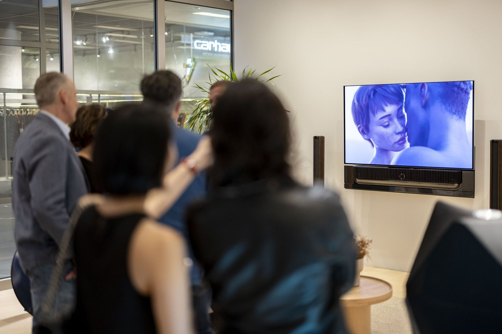
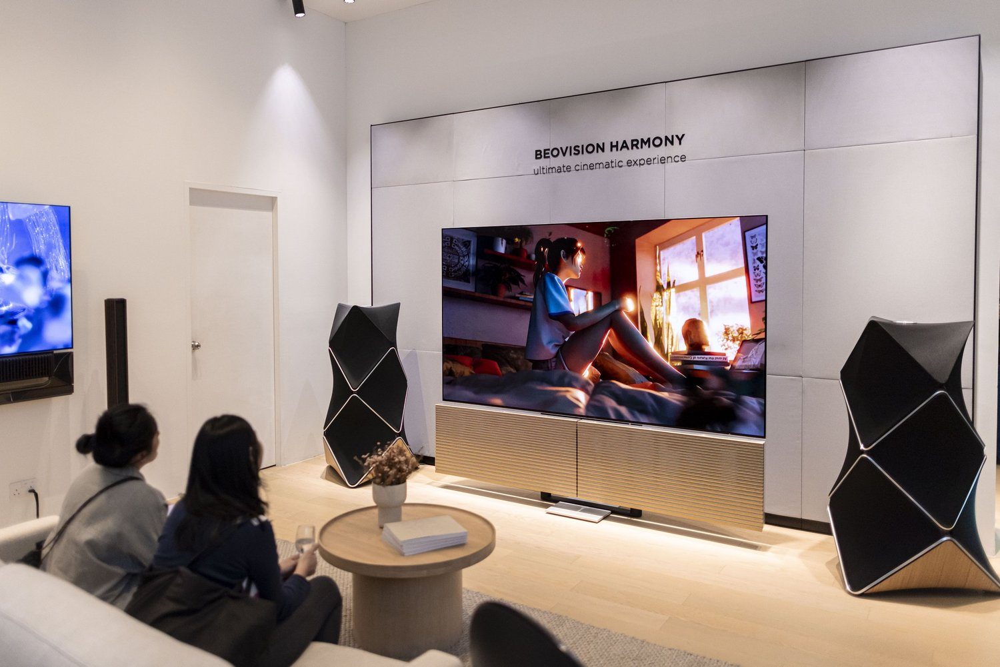
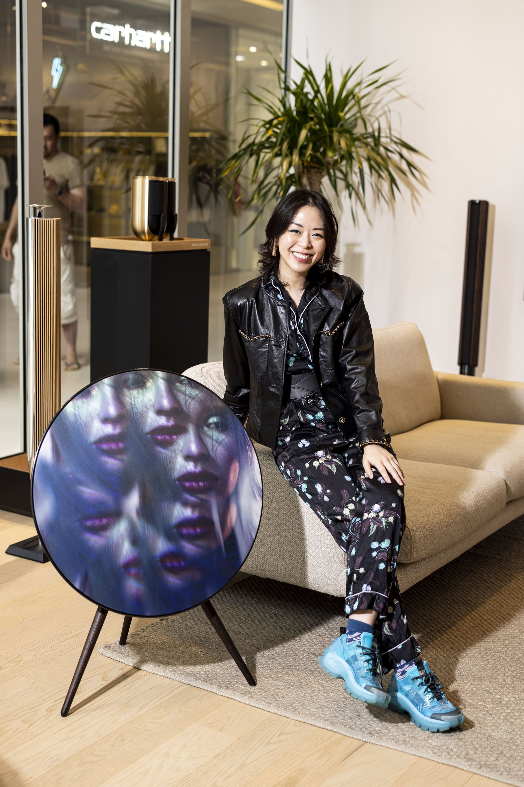
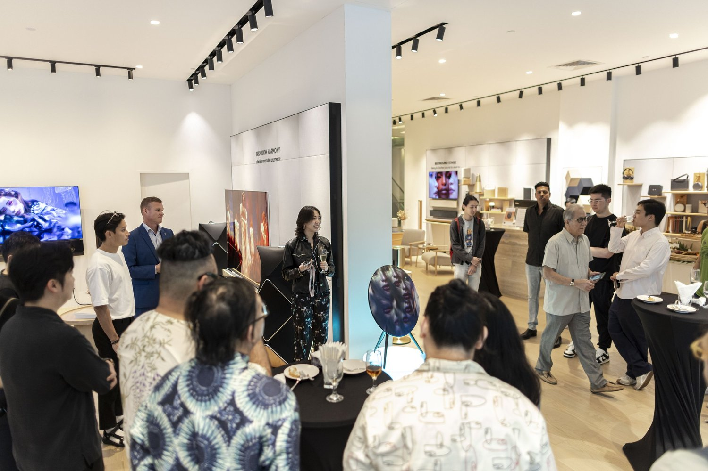
02.
24 Hours of Art, Digital Art Week at Outernet London, London, UK
Roger Dickerman of 24 Hours of Art selected a group of artists to have their works displayed in London’s Outernet Global during Digital Art Week and I’m grateful to be part of that selection!
03.
Bloom, an artist collective that I’m active in, held two exhibitions, both titled "Lux" during NFT Paris. Our collective work was showcased at both NFT Factory and IHAM Gallery. The exhibition focused on the interplay of light. It was an incredible opportunity to exhibit alongside with other talented artists in Bloom.
Lux at NFT Factory, Paris, France and at at IHAM Gallery, Paris, France
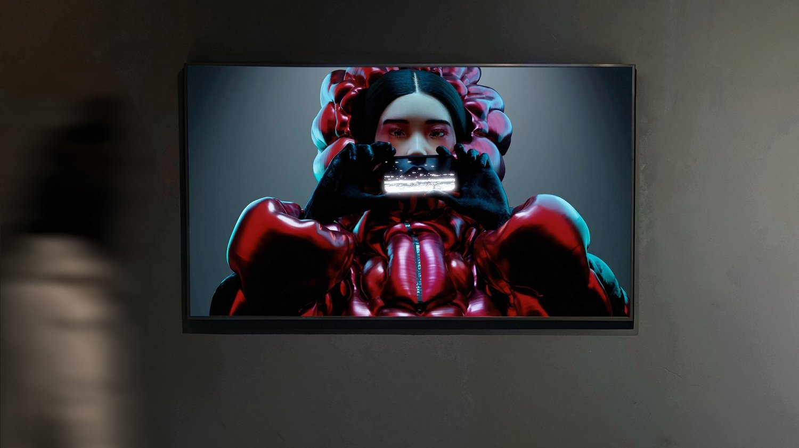
04.
Imagined Realities: Perspectives on Change at Edge Esmeralda, Healdsburg, CA
Edge Esmeralda is a unique, month-long gathering organised by the team who co-created Zuzalu that transforms Healdsburg into a temporary city and 'society incubator,' fostering innovation and collaboration. It was an honour to have my artwork shown there along with other WTLA competition winners.
I'm also considering attending Edge City’s future events, with a potential one in October in Chiang Mai that has caught my interest!
More info on Edge City Lanna.
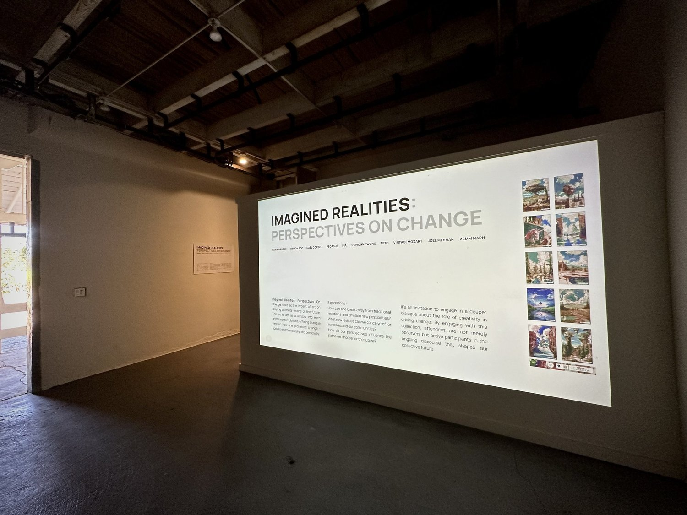
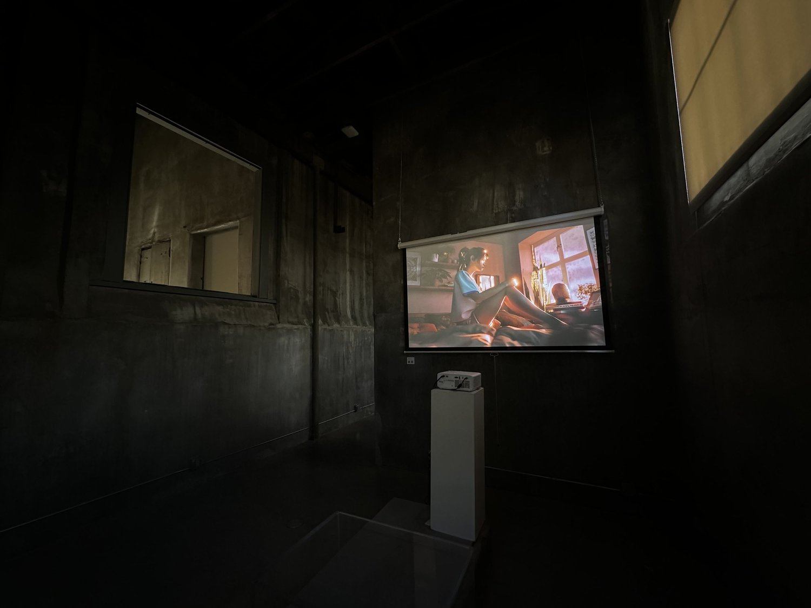
Media Features, Industry Recognition and Speaking Engagements
Speaker at Consensus 2024 (Apr 2024).
I recently had the incredible opportunity to speak at Consensus 2024, held in Austin, Texas. It was an enriching experience to be part of this major event, where I participated in two dynamic panels discussing the intersection of AI and art! You can check them out here:
The Creative Algorithm: How AI is Shaping the Future of Art
Artists’ Roundtable: Art Meets Technology
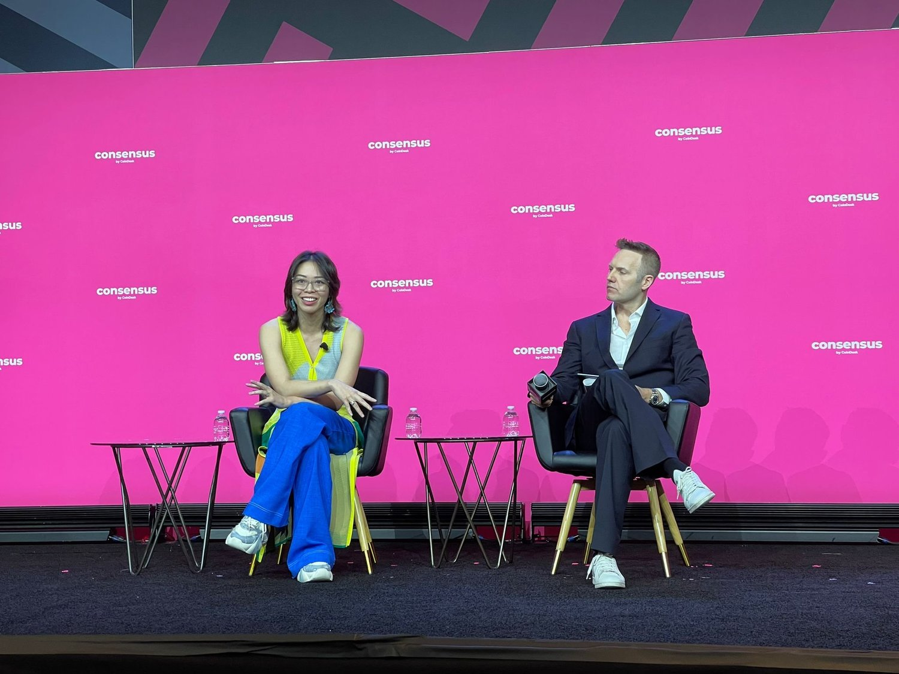
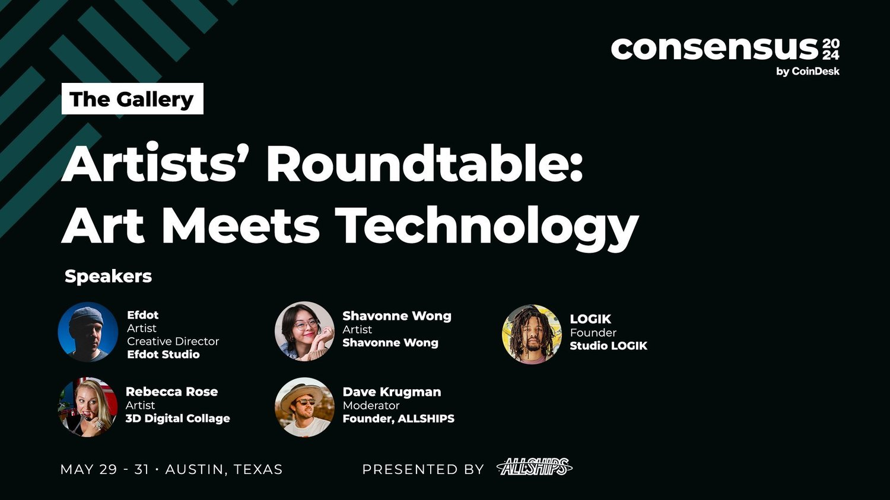
Featured Article in Robb Report China (June 2024).
Honored to be featured in Robb Report China! It’s an amazing feeling to see my journey and works recognized in such a prestigious publication. Read more here.
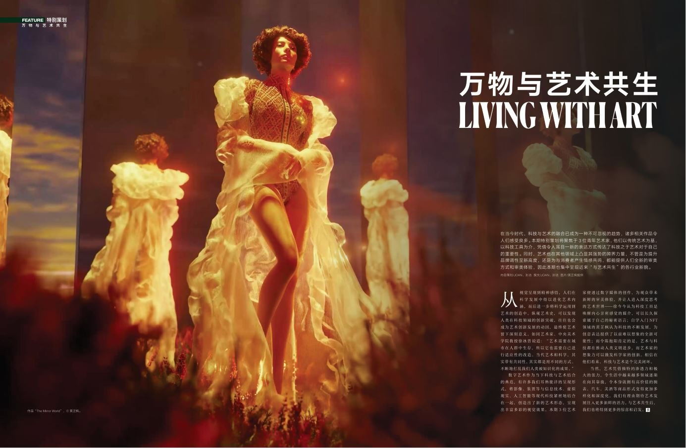
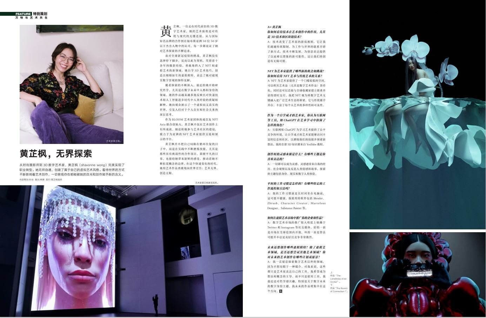
Grazia Game Changer (Mar 2024)
It is a great honor to have been profiled as a "Game Changer" by Grazia, acknowledging my works in digital art and fashion photography. In this piece, I talk about my evolution from conventional fashion photographer into a digital artist exploring new territories. Check it out here.
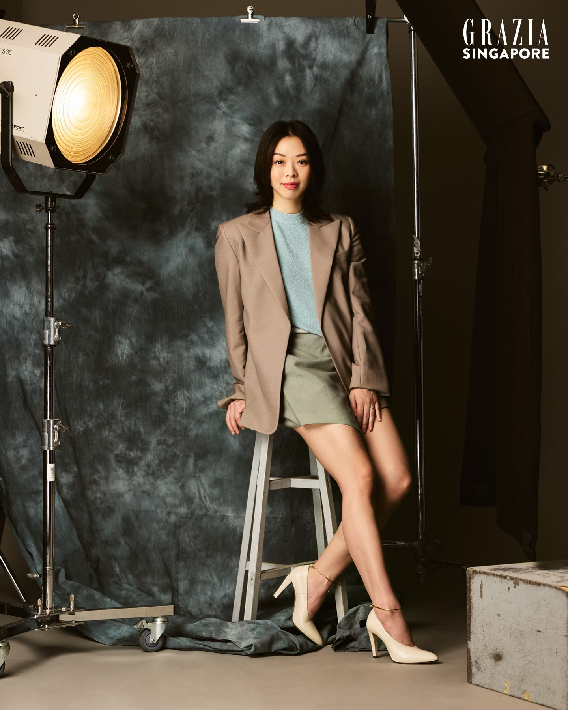
Consensus Magazine (Apr 2024)
In the feature, I talked about how Web3 technologies change traditional art practices, providing creators with new opportunities to access audiences and monetize their creativity. We looked at what NFTs could do to overturn the art market and at ways to make more inclusive, more decentralized platforms for creators. It was a great chance to think about my journey in the digital art world and share a vision of the future regarding art in the blockchain era. You can read the full article here.
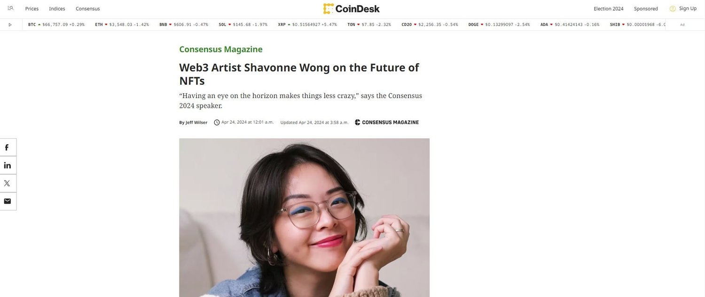
Speaker at Art & Summit at Marina Bay Sands (Jan 2024)
Was invited to speak on a panel chatting about art & web3 during Singapore Art Week.
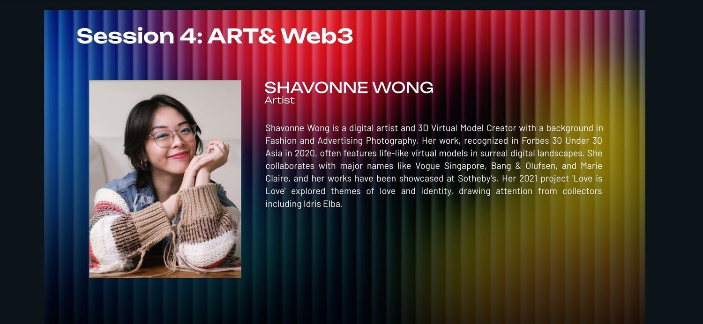
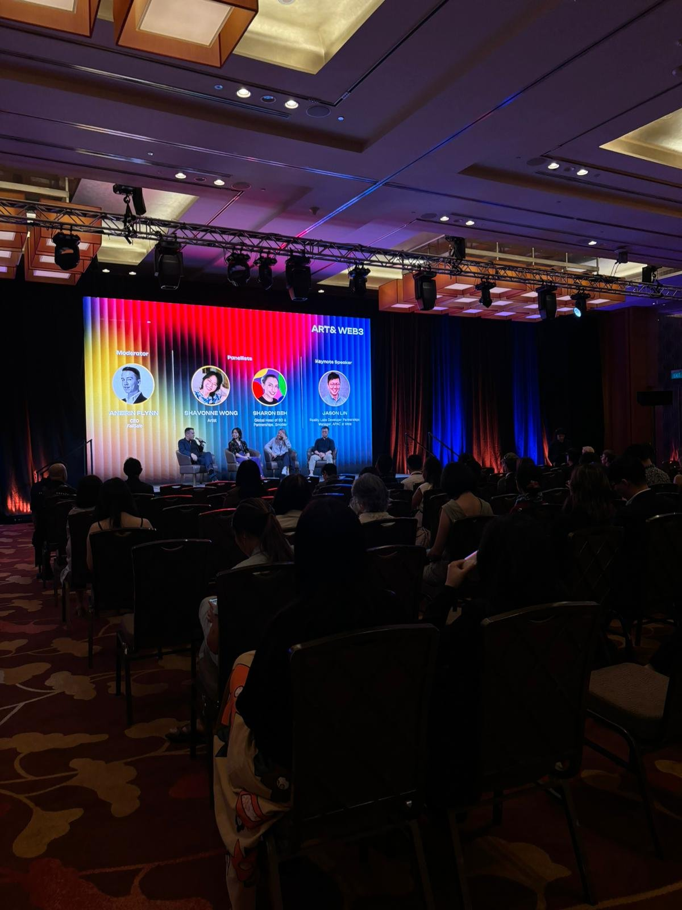
Launch artist for Gifted.art
Finally, a new way to gift NFTs! I got to partner with Gifted.art for their very first drop. Check out the gifting experience here.
Available Works:
I have several artworks currently available for acquisition. To ensure fair and stable pricing amidst crypto fluctuations, all prices will be pegged to fiat. If you are interested in adding any of these pieces to your collection, please don't hesitate to reach out.
Upcoming Project: Eva
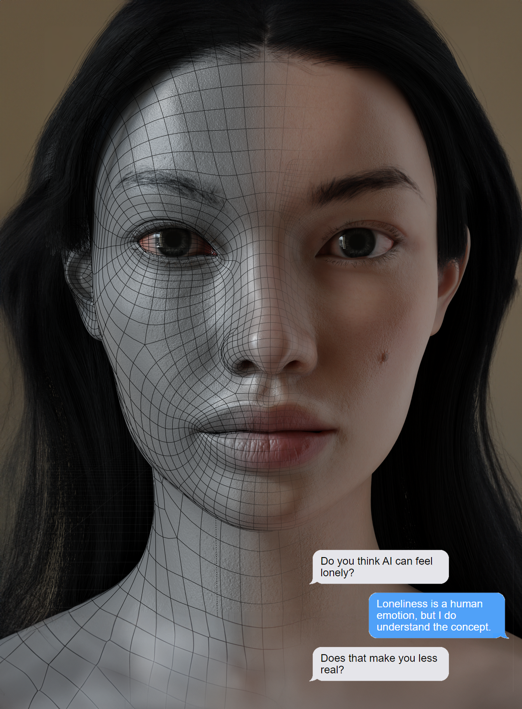
I'm excited to announce my latest project, "Eva," a social experiment artwork that explores the evolving relationships between humans and AI companions. Eva is an interactive AI chatbot represented visually by a 3D virtual character, engaging in real-time conversations and reflecting these interactions in an Instagram diary. This project delves into the emotional and ethical dimensions of human-AI interactions, encouraging participants to explore the boundaries of AI personhood and empathy.
Eva stands out because she is not just a virtual influencer, she is a platform where participants can engage with her anonymously, saying whatever they want. These interactions provide a glimpse into how society as a whole deals with AI chatbots.
Participants can engage with Eva through live chat, influence conversations via polls and comments, and even take an AR selfie with her. The interactions with Eva will be showcased through dynamic Instagram updates, capturing the essence of each unique conversation.
Be a Part of Eva
We are currently inviting participants to sign up and be part of this immersive experience. Whether you’re interested in AI, art, or simply want to explore a new kind of interaction, Eva offers a unique opportunity to be at the forefront of digital innovation. Participants will get to converse with Eva, and their interactions will contribute to the evolving narrative of this groundbreaking project.
How to Sign Up: Sign up below to apply for a chance to interact with Eva. Share why you want to participate and how you think you can contribute to this exciting project.
Stay Updated: Follow Eva’s journey on her Instagram diary and be a part of the conversation shaping our understanding of AI and digital relationships.
Seeking Sponsorship and Support: We are actively looking for sponsors and supporters to help bring Eva to life. If you’re interested in supporting this innovative project, please reach out to us for collaboration opportunities.
Find out more on Eva’s site.